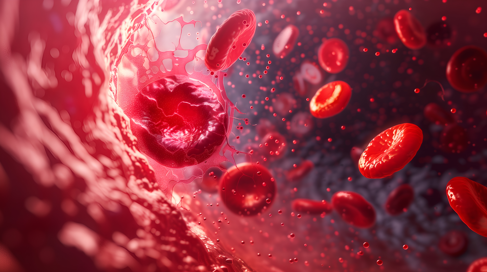

CID D47.1 ou C94.5
Mielofibrose
Entenda a doença, os sintomas, o diagnóstico e o cuidado.
Imagem meramente ilustrativa. Paciente fictício.

O que é a mielofibrose?
A mielofibrose é um tipo de câncer do sangue que ocorre quando a medula óssea, tecido localizado no interior dos ossos e responsável pela produção das células sanguíneas, sofre alterações e passa a apresentar formação excessiva de tecido fibroso. Esse processo prejudica a produção adequada das células do sangue e pode provocar diferentes alterações no organismo.1
A doença faz parte do grupo das neoplasias mieloproliferativas, condições em que a produção de glóbulos vermelhos, glóbulos brancos ou plaquetas ocorre de maneira anormal.1
Por que a mielofibrose acontece?
A medula óssea saudável produz células-tronco capazes de dar origem às diferentes células do sangue. Na mielofibrose, alterações adquiridas no DNA de uma dessas células podem fazer com que ela passe a se multiplicar de forma anormal. Com o tempo, esse processo favorece inflamação e formação de tecido cicatricial na medula óssea, dificultando a produção normal das células sanguíneas.1,2
Essas alterações genéticas são adquiridas ao longo da vida e NÃO SÃO herdadas. Entre as mutações encontradas com maior frequência estão aquelas nos genes JAK2, CALR e MPL. A mutação JAK2 está presente em aproximadamente 50% a 60% dos casos, enquanto alterações em CALR são observadas em cerca de 25% e em MPL em aproximadamente 5% a 10% dos pacientes.3
Mielofibrose primária e secundária
A mielofibrose pode ser classificada como primária ou secundária.1
Mielofibrose primária
Na mielofibrose primária, a doença surge sem estar relacionada a outra condição pré-existente da medula óssea.
Mielofibrose secundária
Já a mielofibrose secundária ocorre como consequência de outra neoplasia mieloproliferativa, como a policitemia vera ou a trombocitemia essencial.1
Em ambos os casos, existe risco de progressão para leucemia mieloide aguda (LMA), condição caracterizada pelo aumento de células sanguíneas imaturas na medula óssea.1
Quais são os sinais e sintomas da mielofibrose?
A mielofibrose geralmente apresenta evolução lenta, e algumas pessoas podem permanecer sem sintomas durante anos.1
Quando aparecem, os sintomas podem incluir:1,4
- fadiga e fraqueza;
- febre e sudorese noturna;
- palidez;
- perda de peso;
- coceira;
- palpitações e falta de ar;
- dores nos ossos ou articulações;
- infecções frequentes;
- aumento do baço ou do fígado;
- dor ou sensação de volume abaixo das costelas;
- sangramentos ou hematomas anormais;
- formação inexplicada de coágulos sanguíneos.
O aumento do baço, chamado de esplenomegalia, é uma manifestação importante da mielofibrose. Isso ocorre porque o órgão pode ficar sobrecarregado com o aumento de células sanguíneas anormais.2
Como a mielofibrose pode afetar o organismo?
As alterações na produção das células sanguíneas podem provocar diferentes consequências.4
Anemia
A anemia ocorre quando há redução dos glóbulos vermelhos. Como essas células transportam oxigênio pelo organismo, sua diminuição pode causar fadiga, fraqueza e falta de ar.4
Trombocitopenia
A trombocitopenia corresponde à redução do número de plaquetas, células importantes para a coagulação do sangue. Quando estão diminuídas, podem ocorrer sangramentos e hematomas com maior facilidade.4
Esplenomegalia
Já a esplenomegalia ocorre pelo aumento do baço, que pode ficar sobrecarregado devido à presença de grande quantidade de células sanguíneas anormais.4
Como é feito o diagnóstico da mielofibrose?
O diagnóstico pode ser desafiador porque, nas fases iniciais, a doença pode não causar sintomas e, eventualmente, ser confundido com outras neoplasias mieloproliferativas, como policitemia vera e trombocitopenia essencial, sendo importante a avaliação minuciosa pelos médicos hematologistas e patologistas para diferenciá-las e diagnosticar corretamente. Em muitos casos, a suspeita surge durante exames de rotina, após a identificação de alterações no hemograma, aumento do baço ou queixas como fraqueza e cansaço.4
A investigação pode incluir diferentes exames:
Hemograma completo
Permite avaliar a quantidade e as características das células do sangue. Entre as alterações que podem ser observadas estão redução da hemoglobina, mudanças na quantidade de plaquetas e alterações nos glóbulos brancos.2,4
Exames de imagem
Raio-X e ultrassonografia podem ser utilizados para avaliar principalmente o tamanho do baço e do fígado.2,4
Biópsia da medula óssea
Uma amostra da medula é analisada para avaliar a produção das células sanguíneas e identificar alterações como a presença de tecido fibroso e células anormais.2,4
Cariotipagem
Permite avaliar o número, a forma e o tamanho dos cromossomos presentes nas células.2,4
Análise de mutações genéticas
Amostras de sangue ou da medula óssea podem ser analisadas para pesquisar alterações nos genes JAK2, CALR e MPL.2,4
O diagnóstico precoce permite iniciar o acompanhamento e definir a estratégia de cuidado mais adequada para cada paciente.2,4
Como é feito o tratamento da mielofibrose?
O tratamento é definido individualmente e considera fatores como idade, condições clínicas, presença de sintomas e extensão da doença.9
Quando a mielofibrose não causa sintomas, pode ser recomendado inicialmente apenas o monitoramento periódico com o hematologista. Nos pacientes sintomáticos ou com doença mais avançada, diferentes estratégias podem ser consideradas.2,4
O tratamento medicamentoso pode incluir terapias-alvo, selecionadas de acordo com o perfil do paciente, além de estratégias destinadas ao controle de manifestações da doença, como anemia e outros sintomas.2,4
Em determinadas situações, também podem ser utilizadas quimioterapia, radioterapia ou outros medicamentos para ajudar a controlar sintomas e complicações.5
Transplante de medula óssea
O transplante de medula óssea é considerado a única opção com potencial curativo para a mielofibrose. No entanto, nem todos os pacientes têm indicação ou condições clínicas para realizar o procedimento, especialmente em razão da idade, da fragilidade ou da presença de outras doenças.2,4
O tratamento envolve a substituição das células da medula óssea do paciente por células-tronco provenientes de um doador compatível, após uma preparação específica para o transplante.2,4
A decisão deve ser individualizada e discutida com o hematologista.
Quando pode ser necessária a retirada do baço?
Em situações específicas pode ser considerada a esplenectomia, cirurgia para retirada do baço. O procedimento pode ser indicado quando o órgão apresenta aumento importante, provoca dor ou complicações ou interfere nos resultados do tratamento.4
Como está associado a riscos de complicações cirúrgicas, é uma abordagem utilizada apenas em casos selecionados.4

Como lidar com os efeitos do tratamento?
Alguns tratamentos para mielofibrose podem causar efeitos adversos, como fadiga, náusea, tontura e outros desconfortos que podem afetar o bem-estar e a alimentação. Esses sintomas devem ser comunicados à equipe de saúde, que poderá orientar medidas de suporte de acordo com as necessidades de cada paciente.4
O hematologista é o profissional responsável por avaliar as características da doença, definir a estratégia terapêutica mais adequada e acompanhar a resposta ao tratamento. O acompanhamento regular é importante mesmo na ausência de sintomas, permitindo monitorar a evolução da mielofibrose e possíveis complicações.4
Por que acompanhar os sintomas é importante?
A percepção do próprio paciente sobre seus sintomas e sobre o impacto da doença na qualidade de vida é uma parte importante do acompanhamento da mielofibrose.5
Para ajudar nessa avaliação, foi desenvolvido o Questionário para Avaliação dos Sintomas em Neoplasias Mieloproliferativas, versão adaptada e validada para o português brasileiro do MPN-SAF TSS. Ele pode auxiliar os profissionais de saúde a acompanhar a carga de sintomas e sua evolução ao longo do tratamento.5
Convivendo com a mielofibrose
Viver com a mielofibrose pode envolver desconfortos, mudanças na rotina e incertezas. O apoio de familiares, amigos e profissionais de saúde pode ajudar a enfrentar os desafios relacionados ao diagnóstico e ao tratamento.1,4
Conversar abertamente com a equipe médica, esclarecer dúvidas e compreender o que está acontecendo com o organismo são atitudes que podem ajudar o paciente a se sentir mais seguro durante o tratamento.1,4
O apoio psicológico também pode ser importante para lidar com as emoções relacionadas à doença. Familiares, amigos, grupos de apoio e profissionais especializados podem fazer parte dessa rede.1,4
Hábitos saudáveis podem fazer parte do cuidado
Manter-se tão ativo quanto possível, ter uma alimentação equilibrada, dormir adequadamente e preservar uma rotina regular podem contribuir para o bem-estar e ajudar a lidar com alguns sintomas ou efeitos relacionados ao tratamento.1
As mudanças devem respeitar o estado clínico e o condicionamento físico de cada pessoa. Antes de iniciar atividades físicas ou realizar mudanças importantes na alimentação, é importante conversar com o médico sobre possíveis restrições.1
Artigos relacionados
Referências
1. Myelofibrosis. Cleveland Clinic. Disponível em: https://my.clevelandclinic.org/health/diseases/15672-myelofibrosis. Acesso em Setembro de 2026.
2. Chronic Myeloproliferative Neoplasms Treatment. National Cancer Institute (NCI). Disponível em: https://www.cancer.gov/types/myeloproliferative/patient/chronic-treatment-pdq. Acesso em Setembro de 2026.
3. Shao R, Ryder C, Wang L, Zhang H, Moscinski L, Martin M, Shebes M, Li JY, Song J. A Review of the Pathological and Molecular Diagnosis of Primary Myelofibrosis. Cancers (Basel). 2025 Dec 24;18(1):50.
4. Myeloproliferative Neoplasms: In Detail. Disponível em: https://bloodcancerunited.org/blood-cancer/myeloproliferative-neoplasms-mpns. Acesso em Setembro de 2026.
5. Guaraná M, et al. Myeloproliferative Neoplasm Symptom Assessment Form – Total Symptom Score (MPN-SAF TSS) questionnaire: translation, cultural adaptation and validation to Brazilian Portuguese. Hematology, Transfusion and Cell Therapy. 2022;44(3):321–327.
Material destinado ao público leigo. 2026 © Direitos Reservados Novartis Biociências S/A – Proibida a reprodução total ou parcial não autorizada. Atualizado em 22 de setembro de 2026.
BR-39746